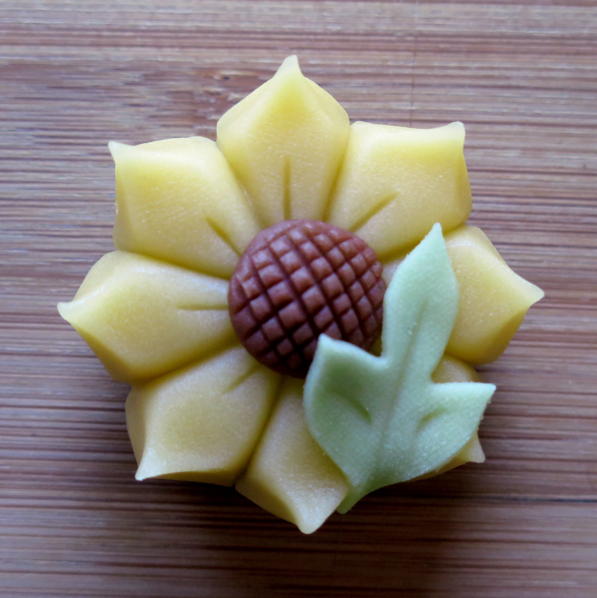

三重県伊勢市宇治浦田の和カフェ 和cafe ととのま
クチコミ58件という実績が、丁寧なお点前とくつろぎの空間づくりの証です。
上生菓子や抹茶など、和の趣をそのままに、心穏やかなひとときをご用意します。
神宮の杜にほど近い地で、地域の皆様や参拝の方に長く愛されるお店を目指しています。

抹茶・和菓子を中心に、季節のメニューをご用意しています。
メニュー・料金を見る →
お電話またはInstagramのDMにて、お気軽にお問い合わせください。